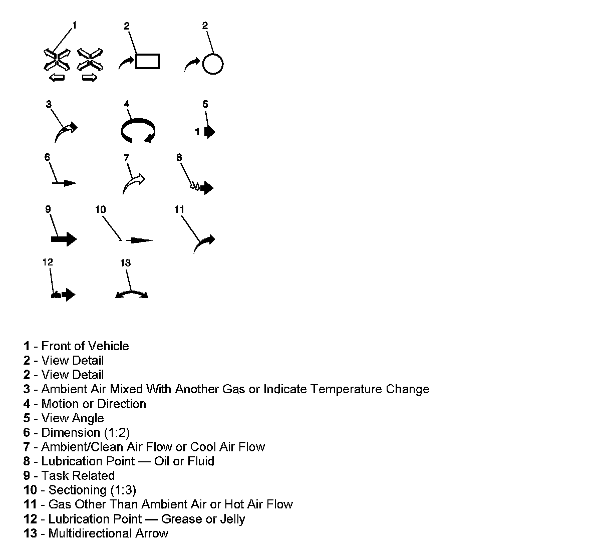

Operation CHARM
: Car repair manuals for everyone.
Home
>>
Cadillac
>>
2007
>>
Escalade ESV AWD V8-6.2L
>>
Repair and Diagnosis
>>
Powertrain Management
>>
Ignition System
>>
Diagrams
>>
Diagnostic Aids
>>
Arrows and Symbols
Arrows and Symbols
ARROWS AND SYMBOLS

This service data uses various symbols in order to describe different service operations.